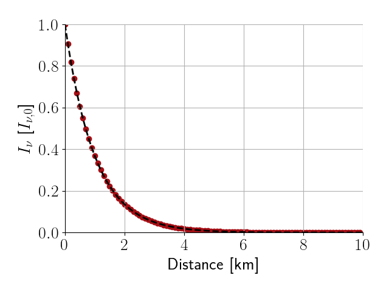

Monte Carlo methods for radiative transfer¶
This project is an exploration of Monte Carlo techniques applied to solve the radiative transfer equation (RTE).
Formulation¶
Homogeneous and purely absorbing medium¶
Starting with the simplest case, a homogeneous, purely absorbing medium, the RTE can be solved using the following Monte Carlo approach:
- Start with a photon entering a discretized medium
- Determine a sufficiently small step sixe \(\Delta x\)
- Sample a random number \(r\) from a uniform distribution over the inverval \([0, 1]\)
- If \(r > \exp(-\alpha \cdot \Delta x)\) the photon is absorbed and the iteration stops. Otherwise
- update the position of the photon continue with 1.
The probability density function (PDF) of path lengths obtained with the procedure outlined above will satisfy the differential form of the RTE. To see why this is the case, note that the distribution of path lengths generated by the algorithm described above is memoryless. This means that, given a photon has traveled a path of length \(X > x\), the probability of reaching \(X > x + \Delta x\) is independent of \(x\):
which is the same as
Now, taking the logarithm on the left side, diving by \(\Delta x\) and making \(\Delta x\) sufficiently small, the following differential equation is obtained for the PDF \(\frac{dP(X > x)}{dx}\) of \(X\):
The function \(P(X > x)\) thus satisfies the differential form of the radiative transfer equation for a purely absorbing medium. \(P(X > x)\) can be approximated by recording the frequencies with which photons visit gird cells in the discretized domain.
Preliminary results¶
So far llrte can do non-polarized RT on three-dimensional, regular
cartesian grids. Some preliminary results are presented below.
Collimated beam in 1D¶
To test the implementation a perfectly colimated beam propagating through a one-dimensional, homogeneous medium is simulated. The homogeneous medium of a length of \(10\) km has been discretized into 100 equally sized bins. For each bin it was recorded how often a photons passes through it. The resulting counts normalized by the total number of simulated photons (\(10^7\)) are shown in the figure below. Red markers show the simulated results, the dashed line shows the analytical solution.
{kind=link}
Isotropic point source¶
As simple test case an isotropically emitting point source in a homogeneous medium is considered. The point source is placed in the center of a cube with dimensions \(10\ \text{km} \times 10\ \text{km} \times 10\ \text{km}\), which is discretized into 101 bins along each dimension.
Intersections through the normalized intensity along the coordinate planes are displayed in the figure below. The observed frequencies have been scaled by the squared distance from the source to account for beam divergence effects. The regular distances between the log-scaled color contours show that the spectral intensity decreases exponentially, which is the expected behavior.
To verify this more thoroughly